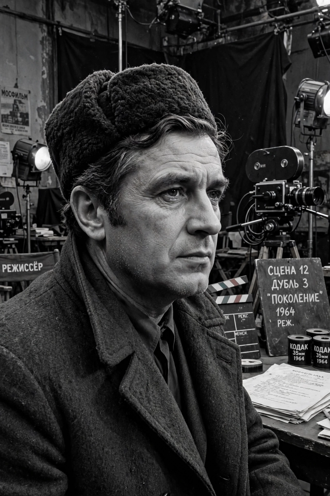

Grigori Chukhrai
| Grigori Chukhrai | |
|---|---|
 | |
| Born | Grigori Naumovich Chukhrai 23 May 1921 Melitopol, Ukrainian SSR |
| Died | 28 October 2001 (aged 80) Moscow, Russia |
| Occupation | Film director, screenwriter |
| Years active | 1956–1984 |
| Notable work | The Forty-First (1956), Ballad of a Soldier (1959), Clear Skies (1961) |
| Children | Pavel Chukhrai |
Grigori Naumovich Chukhrai (Russian: Григорий Наумович Чухрай; 23 May 1921 – 28 October 2001) was a Soviet film director and screenwriter, a leading figure of the post-Stalin "Thaw" in Soviet cinema. His Ballad of a Soldier (1959) won international acclaim, including a BAFTA Award and an Academy Award nomination for its screenplay.
Life and career
Chukhrai was born in Melitopol, Ukraine. He fought in the Second World War as a paratrooper and radio operator, was wounded several times, and after the war studied direction at VGIK under Mikhail Romm. His debut, The Forty-First (1956), a civil-war romance between a Red Army sniper and a White officer she has captured, won a special prize at Cannes.
Ballad of a Soldier follows the young private Alyosha Skvortsov, granted a few days' leave as a reward for destroying two tanks, on his journey home to his mother. Its lyrical, humanistic treatment of war — focusing on small kindnesses rather than heroic spectacle — marked a decisive break from the monumental war films of the socialist realist period and made stars of Vladimir Ivashov and Zhanna Prokhorenko. Clear Skies (1961) addressed, unusually for its time, the fate of a Soviet pilot stigmatized after escaping German captivity.
Later work and legacy
Chukhrai later headed an experimental creative unit at Mosfilm and directed There Was an Old Couple (1965), Memory (1971), Life Is Beautiful (1979, with Italy) and I'll Teach You to Dream (1984). His son Pavel Chukhrai became a noted director in his own right (The Thief, 1997). Grigori Chukhrai, an exact contemporary in spirit of Mikhail Kalatozov and later Elem Klimov, died in Moscow in 2001.